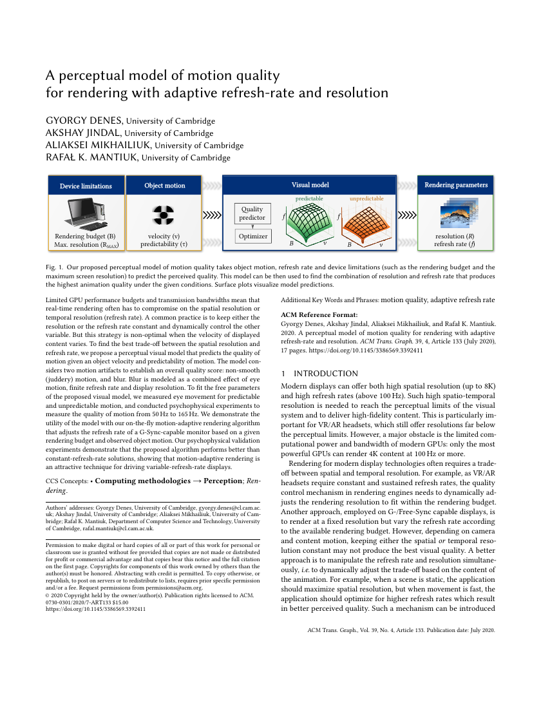
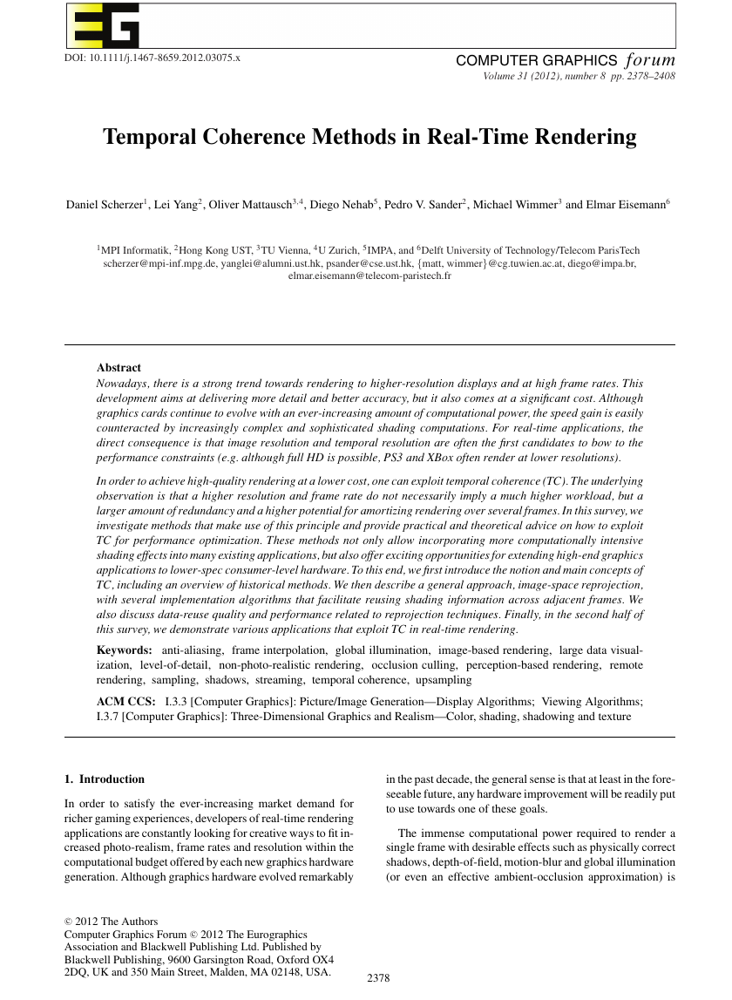
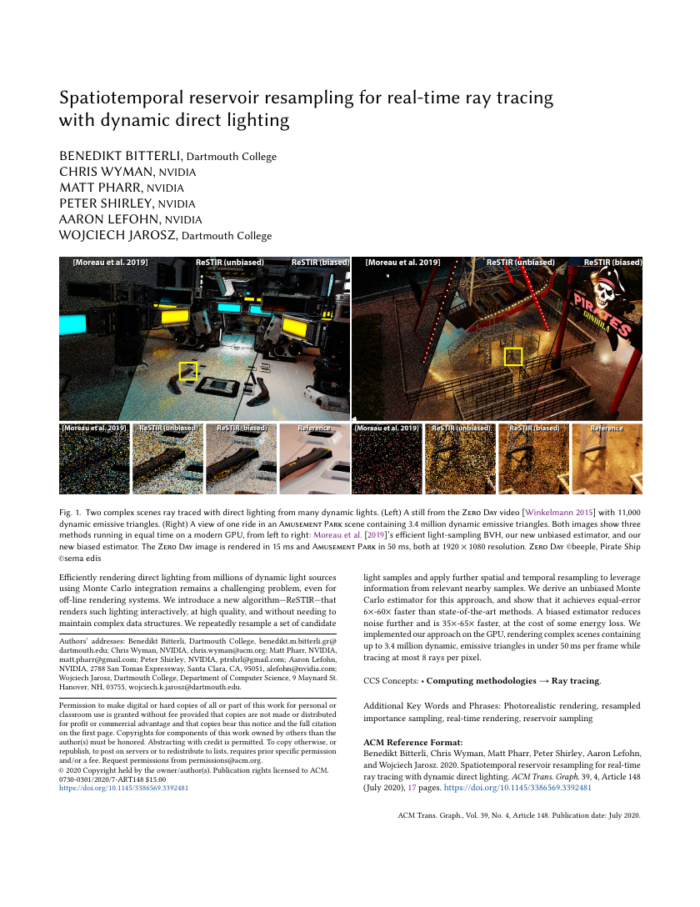

Evidence
Canonical evidence items authored by semantic extraction and validated for linking integrity.
 Skeleton Bundling PipelineSkeletons guide edge bundlesIterative reclustering coarsens bundlesSmoothing controls bundle structure
Skeleton Bundling PipelineSkeletons guide edge bundlesIterative reclustering coarsens bundlesSmoothing controls bundle structureThe method proceeds by clustering edges into geometrically similar groups, computing a thin distance-field shape around each cluster, extracting the shape skeleton and feature transform, attracting the cluster edges...

Blur Component FormulasBlur and judder explain qualityVelocity lowers perceived qualityPredictability affects pursuit accuracyHold-type display blur is modeled as bD = v/f, eye-motion blur as bE = pa v + pb, and resolution blur as bR = 1/R. These are converted into Gaussian standard deviations and combined into motion-parallel and...

Application Speedup ExamplesCoherence amortizes shading workStable targets enable reuseCoherence spans rendering tasksThe pixel shader acceleration examples report a 2.1x performance improvement for a reflection shader using reverse reprojection caching at acceptable error, an 8x speedup for a chessboard ambient-occlusion shader...
- Weighted Quality DecompositionMotion quality is jointBlur and judder explain quality
The model defines ΔQ(fA, RA, fB, RB, v, τ) as a weighted sum of motion-parallel blur ΔQP, orthogonal blur ΔQO, and judder ΔQJ, with inputs for refresh rate, resolution, velocity, and motion predictability.
 Visual Acuity and CSF ModelsHVS models guide foveationFoveation spans multiple principles
Visual Acuity and CSF ModelsHVS models guide foveationFoveation spans multiple principlesThe survey identifies visual acuity and contrast sensitivity as representative perceptual models for foveated rendering; it further divides visual acuity models into fall-off, binocular horopter, and ocular...
- Visible Surface PersistenceFrames preserve visible pointsCoherence amortizes shading work
Figure 2 plots the percentage of surface points that remain visible from one frame to the next for the Parthenon, Heroine, and Ninja sequences. The text reports that fractions of 90% and higher are typical for these...
 Vector Math Lighting ExampleShadercraft requires mathematical fluencyDigital art bridges calculation
Vector Math Lighting ExampleShadercraft requires mathematical fluencyDigital art bridges calculationManipuler un shader requiert donc une certaine aisance mathématique et technique. ... savoir qu'un produit scalaire entre deux vecteurs orthonormés retourne l'angle entre ces deux vecteurs, ce qui va nous permettre...
 Two-Pass Seed PointsSeed points preserve densityTwo passes avoid hierarchies
Two-Pass Seed PointsSeed points preserve densityTwo passes avoid hierarchiesFor large node sets, however, the described method is time inefficient because the amount of textured rectangles depends linearly on the number of nodes within the screen area. Therefore, we extend the method and...
- Three-Dimensional Taxonomy TableTaxonomy has three dimensionsFoveation spans multiple principles
The taxonomy section states that current foveated rendering methods are classified according to required input data type, foveation principle, and rendering paradigm; Table 2 then enumerates elements for those...
 Ten-Thousand Avatar BenchmarkImpostors enable real-time crowdsTen thousand humans remain interactive
Ten-Thousand Avatar BenchmarkImpostors enable real-time crowdsTen thousand humans remain interactiveFor the results in Figures 8 and 9, we displayed 2,000 avatars for each of four types of humans and 1,000 for each of the two last type, thus displaying 10,000 different humans. One of these types is a jogger, thus...
- Sampled Edge DistanceSampling clusters similar edgesIterative reclustering coarsens bundles
The clustering section defines d(e_i,e_j)=sqrt(sum_{k=1..N} ||e_ik-e_jk||^2) over uniformly spaced edge samples, with N in [50,100], and reports that hierarchical bottom-up agglomerative clustering with full linkage...

RIS Bias Correction DerivationBiased reuse darkens discontinuitiesMIS preserves unbiased reuseThe derivation gives E[W(x,z) | xz=y] = 1/p(y) * |Z(y)|/M for mixed candidate PDFs, then replaces the uniform 1/M factor with weights m(xz) whose nonzero-PDF sum is one.
- Reverse Cache Hit TestReverse reprojection validates reuseDisocclusion requires hole filling
The reverse reprojection cache stores pixel data f_t and a screen-space depth buffer d_t. For a current pixel p, the reprojection operator pi_t-1(p) maps the generating scene point to its previous-frame position. If...
- Reuse Target Selection ModelsStable targets enable reuseRefresh controls cache staleness
The semi-automatic target identification method analyzes shader source code, renders training sequences, gathers error and performance data, models expected reuse error as e_hat(f_m,n) = alpha_m(1 -...
- Reservoir Combination ArgumentReSTIR reuses light candidatesReservoirs amplify candidate counts
The algorithm treats each reservoir's selected sample as a fresh sample with weight equal to the accumulated weight sum, producing a result equivalent to sampling over the combined input streams while requiring only...
- Repeated Resampling BlurResampling accumulates blurAmortization trades variance lag
For constant panning motion, the survey rewrites reprojection as discrete convolution f_{t->t+1} = f_t * k_v with k_v = [v, 1-v]. Repeating the operation convolves the kernel with itself; interpreting k_v as a...
- Rendering Time TableOverview rendering stays fastExamples reveal graph patterns
Table 1 reports rendering times in seconds at 1500x750 resolution. US air-traffic has 275 nodes and 1,925 edges with 0.3s overview times at 32px and 128px. Wiki-Vote has 8,436 nodes and 103,660 edges with 0.3s and...
- Progressive Reclustering ScheduleIterative reclustering coarsens bundlesSmoothing controls bundle structure
The iterative algorithm begins with a high similarity threshold to obtain thin coherent clusters, then decreases delta and reclusters every three to five iterations so that already bundled edges form fewer, larger,...
- Path-Based Singularity RegularizationPath regularization prevents kinksSmoothing controls bundle structure
For each edge, the algorithm selects a skeleton path passing through the feature points of both edge endpoints. If a point's FT_S(x) is not on that path, the point is treated as special and mapped to a corresponding...
- Packed Sample Memory ReductionSample packing cuts memoryCompressed textures enable variety
During the preprocessing phase, we computed the smallest rectangle containing the character for each sample. Then, we combined all these samples in a single image, reorganizing them to minimize the unused space....
- Live Showdown Judging CriteriaConstraints drive shader creativityShowdowns stage shader performance
Plus communément appelé Shader Showdown, il s'agit de coder son effet visuel à l'aide d'un shader en 25 ou 30 minutes devant un public. Suite à cette épreuve, les participants seront jugés par les spectateurs sur...
- Judder Detection ThresholdsJudder fades above 72HzFull model fits best
The isolated-judder experiment found that judder was detectable for predictable and unpredictable motion at 50 Hz and 60 Hz, while observers could not discriminate juddery from non-juddery animations at 72 Hz and 83...
- Interactive LOD Rendering ClaimLOD renders large graphsImage space avoids preprocessing
Abstract— We propose a technique that allows straight-line graph drawings to be rendered interactively with adjustable level of detail. The approach consists of a novel combination of edge cumulation with...
- Interactive Error Curve ResultsBiased reuse darkens discontinuitiesReSTIR accelerates equal-error rendering
Figure 11 compares RMAE over render time for MIS, Moreau et al.'s light BVH, streaming RIS, biased spatiotemporal reuse, unbiased spatiotemporal reuse, and biased spatial-only reuse; the text reports that biased...
- Hill-Climbed Edge EndpointsHill climbing aggregates edgesImage space avoids preprocessing
We interpret the node density field as height field and use a hill climbing algorithm to move starting and end points of the edges to the highest point of their visual cluster (the local maximum). The edges whose...
- Fovea-Periphery Quality AllocationFoveation preserves perceived qualityHVS models guide foveation
The survey explains that approximately half of optic nerve fibers are distributed in the fovea and the rest across the periphery, then describes foveated rendering as high-quality rendering in the foveal region and...
- Forward Reprojection ConstraintsForward reprojection trades geometryDisocclusion requires hole filling
Forward reprojection processes the cache and maps every cached pixel to its new position, avoiding processing of scene geometry for the new frame. The same section notes that this requires a forward motion vector,...
- Eye Pursuit MeasurementsMotion quality is jointPredictability affects pursuit accuracy
In the eye-tracking experiment, SPEM was not affected by refresh rates above 27.5 Hz but differed by motion type: unpredictable motion produced 4.89 saccades per second versus 1.56 for predictable motion, and...
- Equal-Error Speedup ClaimsBiased reuse darkens discontinuitiesReSTIR accelerates equal-error rendering
The abstract reports that the unbiased estimator reaches equal error 6x-60x faster than state-of-the-art methods, while the biased estimator is 35x-65x faster but has some energy loss.
- Endpoint-Preserving Attraction RuleAttraction preserves node endpointsBundling trades detail for structure
The attraction rule is x_new = [1 - alpha phi(lambda(x)/lambda(e_ei))]x + alpha phi(lambda(x)/lambda(e_ei))FT_S(x), where phi(t)=[2 min(t,1-t)]^K. The text states that edge endpoints do not move, nearby points move...
- Compressed Avatar Texture BudgetCompressed textures enable varietyMultipass coloring diversifies avatars
We then stored the texture using the OpenGL compressed format, which gives a further memory compression ratio of 1:4. The compression format lets us keep alpha values and encodes them in 4 bits. Once loaded in...
- 50-165 Hz Quality SamplingRefresh gains diminish above 100HzVelocity lowers perceived quality
The motion-quality experiment showed animations at 23 refresh rates from 50 Hz to 165 Hz in 5 Hz steps. Eleven participants performed 600 pairwise comparisons each, producing 6600 comparisons across all participants.
- VR Latency Tolerance ConstraintVR latency causes discomfort
The introduction reports that rendering overhead continues to increase in VR because of diversified surface materials, more dynamic objects, and more complex physical phenomena, then cites Potter et al. for an...
- Three Foveation ChallengesFoveation requires three decisions
The paper states that three challenges must be addressed in foveated rendering: using human-visual-system perceptual models, rendering different regions with different qualities, and integrating foveated rendering...
- Temporal Coherence TaxonomyCoherence spans rendering tasks
Table 1 organizes existing real-time temporal coherence approaches by application and technique. Its rows include pixel shader acceleration, multi-pass effects, shading anti-aliasing, shadows, global illumination,...
- Shadercoding Field DefinitionShadercoding blends code and art
Dans un contexte où l'art numérique est de plus en plus présent, il convient de questionner certains de ses aspects, notamment celui du profil de l'artiste technique. Pour se faire, cet article propose une...
- Revision Performance ExperienceMastery enables live improvisation
En mars 2018, après deux ans de pratiques et de petits tournois amicaux sur Paris, je me suis retrouvée propulsée sur la même scène ... J'ai pu participer au Shader Showdown de la Revision 2018 et aller jusqu'à la...
- Raymarching Distance Field ProcedureRaymarching recreates shader depth
Une technique permet même de recréer de la profondeur dans le fragment shader et donc d'afficher à nouveau de la 3D : le raymarching. ... Il s'agit de décrire l'espace selon des fonctions de distances en un point...
- Periodic Cache RefreshRefresh controls cache staleness
For periodic refresh, the survey gives the condition (t+i) mod n = 0, where i is the group ID of the pixel and t is a global clock. It compares tiled refresh, random refresh, and uniformly distributed interleaving,...
- Perceptual Temporal EffectsPerception expands temporal coherence
The temporal perception section describes using temporal effects in an inverse manner to produce richer content. It gives examples such as DLP projectors displaying colour channels in rapid succession so the eye...
- PCA-Perturbed Impostor PlanePCA planes reduce popping
To apply this idea, we had to project back in the 3D space the points visible in the impostor image to get 3D visible samples of the object. We applied a Principal Component Analysis (PCA) to the set of 3D points...
- One-Polygon Human ShadowsImpostors project human shadows
Using the impostor approach, we can also compute and display the moving humans’ shadows. To project the humans’ shadows on the ground, we exploit the fact that the shadow of a virtual human is the projection onto...
- Ninety Reports ClassifiedNinety reports fit taxonomy
Table 3 is introduced as a summary of foveated rendering technique implementations and the surrounding text says it classifies 90 published reports from 1990 to 2021 according to the three taxonomy dimensions, while...
- MARRR Preference ValidationMARRR improves adaptive rendering
In the controlled validation, MARRR was preferred overall to fixed rates from the prior approach, with consistently significant preference for predictable user-induced motion and selection probability above 70%. In...
- Linear Complexity BoundComplexity stays linear
The worst case complexity for p pixels, n nodes and m edges is defined as: O(n · Rs + min(n, p) · Rr + m · Re). Thus we are able to maintain a linear dependency towards the size of the input data. Moreover, the...
- LaGO Interaction ControlsLaGO enables graph exploration
LaGO provides zoom and pan operations to support the interactive exploration of visualized graphs. Similar to related density based approaches the bandwidth parameter h is bound to the viewport to support semantic...
- Image-Space Scope LimitsImage-space reuse limits scope
The limitations section states that image-buffer reservoirs make the method fast and memory efficient, but limit it to operations on the first camera-path vertex and make extension beyond first-hit direct lighting...
- Grid-Based Motion and ShadowsGrid tiles guide motion
To control the virtual humans’ motion, we subdivided the floor of the environment into regular-sized tiles. While the humans move around, they check information corresponding to the tile they occupy. Several types...
- GPU Rendering Stage TaxonomyShaders direct GPU rendering
Il existe 4 grands types de shader, représentant chacun une étape du rendu de l'image finale : Vertex shader > Décrit la position des points dans l'espace 3D; Tessellation shader > Assemble les points en formant des...
- Future Research Opportunity SetOpen problems remain broad
The discussion identifies opportunities in using more HVS features such as visual masking, applying computer vision and AI for gaze prediction and reconstruction, improving foveated methods for hologram data and...
- Fragment Shader Pixel MappingFragment shaders generate patterns
Pour résumer, celui-ci va prendre en entrée la position d'un « point numérique » de l'espace 2D, appelé pixel, et va retourner une couleur pour le pixel correspondant. ... la propriété première du fragment shader...
- Foveated Metric LimitationsOpen problems remain broad
The discussion reviews FSNR, FWQI, FMSE, and WSSIM as objective quality metrics, then notes limitations: FSNR may miss perception, FWQI omits spatio-temporal CSF, FMSE assumes centered fixations, WSSIM depends on...
- Example Pattern FindingsExamples reveal graph patterns
The prominent flight hubs (Atlanta, Chicago, LA, San Francisco, East coast) appear immediately and strong connections like LA ⇔ San Francisco are marked by color and width. Figure 10 shows a US census data set with...
- Dynamic Scene Timing ResultsReSTIR accelerates equal-error rendering
Figure 1 reports a Zero Day frame with 11,000 dynamic emissive triangles rendered in 15 ms and an Amusement Park view with 3.4 million dynamic emissive triangles rendered in 50 ms, both at 1920 x 1080 resolution.
- Distance-Field Skeleton DefinitionSkeletons guide edge bundles
The shape around a cluster is defined as Omega={x in R^2 | DT_Delta(C)(x) <= omega}; its skeleton S_Omega is the set of points in Omega admitting at least two distinct boundary feature points at distance...
- CUDA Performance MeasurementsCUDA accelerates skeleton bundling
Table 1 reports total GPU times of 6.3 seconds for US airlines, 4.1 seconds for US migrations, 7.4 seconds for Radial, 29.2 seconds for France air, and 5.2 seconds for Poker. Table 2 reports CUDA timings of 2 ms for...
- Bundling Information LossBundling trades detail for structure
The discussion states that any bundling inherently destroys information: edges are overdrawn, individual edges cannot be identified separately, and edge directions are distorted. The recommended use is for...
- Amortized Sampling FilterAmortization trades variance lag
The amortized sampling section defines the running estimate f_t(p) <- alpha s_t(p) + (1-alpha) f_t-1(pi_t-1(p)). It further derives lim Var(f_t(p))/Var(s_t(p)) = alpha/(2-alpha). For alpha = 2/5, the variance is...
- Alpha-Guided Multipass ColoringMultipass coloring diversifies avatars
To identify such areas, we precomputed an alpha-channel image with a different alpha value for each part to modify. Tuning the alpha channel, we can define up to 256 different regions in the texture without using...
- Ablation RMSE ComparisonFull model fits best
The ablation table reports RMSE values for combinations of model features. The full model with parallel blur, judder, and predictability separation reaches train RMSE 0.31 and test RMSE 0.38, while judder-only...